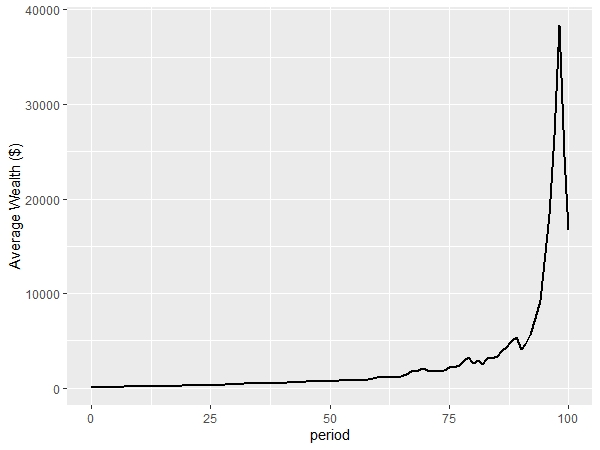
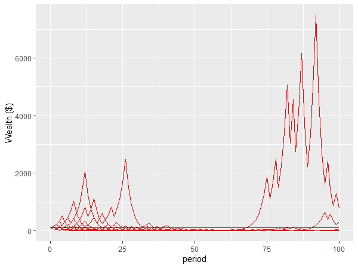
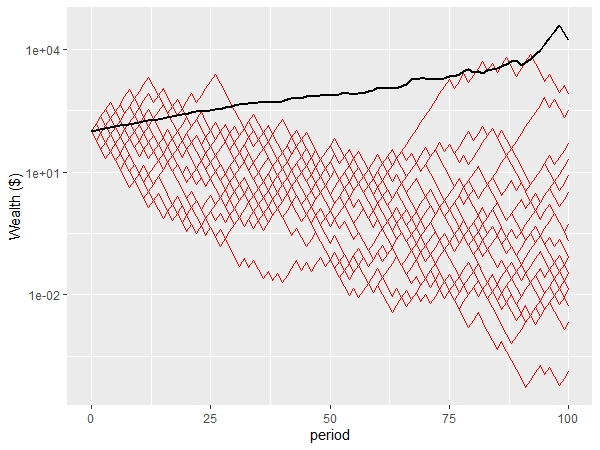
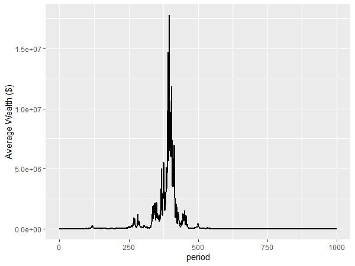
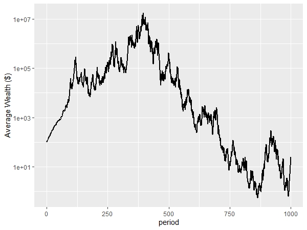
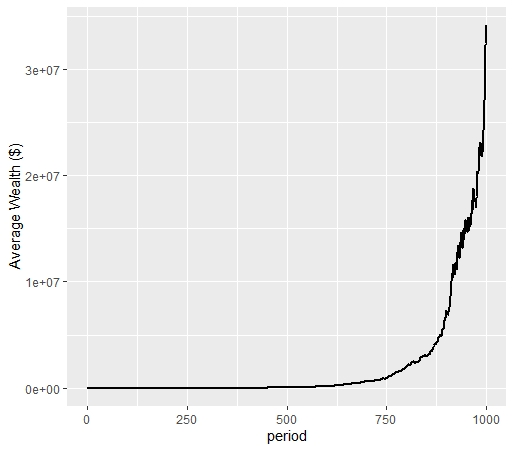
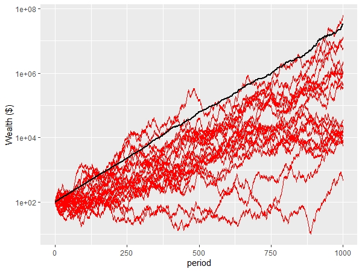
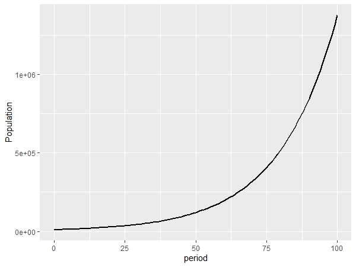

In my previous posts on loss aversion (here, here and here), I foreshadowed a post on how “ergodicity economics” might shed some light on whether we need loss aversion to explain people’s choices under uncertainty. This was to be that post, but the background material that I drafted is long enough to be a stand alone piece. I’ll turn to the application of ergodicity economics to loss aversion in a future post.
The below is largely drawn from presentations and papers by Ole Peters and friends, with my own evolutionary take at the end. For a deeper dive, see the lecture notes by Peters and Alexander Adamou, or a recent Perspective by Peters in Nature Physics.
1. The choice
Suppose you have $100 and are offered a gamble involving a series of coin flips. For each flip, heads will increase your wealth by 50%. Tails will decrease it by 40%. Flip 100 times.
2. The expected payoff
What will happen? For that first flip, you have a 50% chance of a $50 gain, and a 50% chance of a $40 loss. Your expected gain (each outcome weighted by its probability, 0.5*50 + 0.5*-40) is $5 or 5% of your wealth. The absolute size of the stake for future flips will depend on past flips, but for every flip you have the same expected gain of 5% of your wealth.
Should you take the bet?
I simulated 10,000 people who each started with $100 and flipped the coin 100 times each. This line in Figure 1 represents the mean wealth of the 10,000 people. It looks good, increasing roughly in accordance with the expected gain, despite some volatility, and finishing at a mean wealth of over $16,000.
Figure 1: Average wealth of population

Yet people regularly decline gambles of this nature. Are they making a mistake?
One explanation for declining this gamble is risk aversion. A risk averse person will value the expected outcome of a gamble lower than the same sum with certainty.
Risk aversion can be represented through the concept of utility, where each level of wealth gives subjective value (utility) for the gambler. If people maximise utility instead of the value of a gamble, it is possible that a person would reject the bet.
For example, one common utility function to represent a risk averse individual is the logarithm of their wealth. If we apply the log utility function to the gamble above, the gambler will reject the offer of the coin flip. [The maths here is simply that the expected utility of the gamble is 0.5*ln(150) + 0.5*ln(60)=4.55, which is less than the utility of the sure $100, ln(100)=4.61.]
3. The time average growth rate
For a different perspective, below is the plot for the first 20 of these 10,000 people. Interestingly, only two people do better than break even (represented by the black line at $100). The richest has less than $1,000 at period 100.
Figure 2: Path of first 20 people

What is happening here? The first plot shows that the average wealth across all 10,000 people is increasing. When we look at the first 20 individuals, their wealth generally declines. Even those that make money make less than the gain in aggregate wealth would suggest.
To show this more starkly, here is a plot of the first 20 people on a log scale, together with the average wealth for the full population. They are all below average in final wealth.
Figure 3: Plot of first 20 people against average wealth (log scale)

If we examine the full population of 10,000, we see an interesting pattern. The mean wealth is over $16,000, but the median wealth after 100 periods is 51 cents, a loss of over 99% of the initial wealth. 54% of the population ends up with less than $1. 86% finishes with less than the initial wealth of $100. Yet 171 people end up with more than $10,000. The wealthiest person finishes with $117 million, which is over 70% of the total wealth of the population.
For most people, the series of bets is a disaster. It looks good only on average, propped up by the extreme good luck and massive wealth of a few people. The expected payoff does not match the experience of most people.
3.1 Four possible outcomes
One way to think about what is happening is to consider the four possible outcomes over the first two periods.
The first person gets two heads. They finish with $225. The second and third person get a heads and a tails (in different orders), and finish with $90. The fourth person ends up with $36.
The average across the four is $110.25, reflecting the compound 5% growth. That’s our positive picture. But three of the four lost money. As the number of flips increases, the proportion who lose money increases, with a rarer but more extraordinarily rich cohort propping up the average.
3.2 Almost surely
Over the very long-term, an individual will tend to get around half heads and half tails. As the number of flips goes to infinite, the proportion of heads or tails “almost surely” converges to 0.5.
This means that each person will tend to get a 50% increase half the time (or 1.5 times the initial wealth), and a 40% decrease half the time (60% of the initial wealth). A bit of maths and the time average growth in wealth for an individual is (1.5*0.6)0.5 ~ 0.95, or approximately a 5% decline in wealth each period. Every individual’s wealth will tend to decay at that rate.
To get an intuition for this, a long run of equal numbers of heads and tails is equivalent to flipping a head and a tail every two periods. Suppose that is exactly what you did - flipped a heads and then flipped a tail. Your wealth would increase to $150 in the first round ($100*1.5), and then decline to $90 in the second ($150*0.6). You get the same result if you change the order. Effectively, you are losing 10% (or getting only 1.5*0.6=0.9) of your money every two periods.
A system where the time average converges to the ensemble average (our population mean) is known as an ergodic system. The system of gambles above is non-ergodic as the time average and the ensemble average diverge. And given we cannot individually experience the ensemble average, we should not be misled by it. The focus on ensemble averages, as is typically done in economics, can be misleading if the system is non-ergodic.
3.3 The longer term
How can we reconcile this expectation of loss when looking at the time average growth with the continued growth of the wealth of some people after 100 periods? It does not seem that everyone is “almost surely” on the path to ruin.
But they are. If we plot the simulation for, say, 1,000 periods rather than 100, there are few winners. Here’s a plot of the average wealth of the population for 1000 periods (the first 100 being as previously shown), plus a log plot of that same growth (Figures 4 and 5).
Figure 4: Plot of average wealth over 1000 periods

Figure 5: Plot of average wealth over 1000 periods (log plot)

We can see that despite a large peak in wealth around period 400, wealth ultimately plummets. Average wealth at period 1000 is $24, below the starting average of $100, with a median wealth of 1x10-21 (rounding to the nearest cent, that is zero). The wealthiest person has $242 thousand dollars, with that being 98.5% of the total wealth. If we followed that wealthy person for another 1000 generations, I would expect them to be wiped out too. [I tested that - at 2000 periods the wealthiest person had $4x10-7.] Despite the positive expected value, the wealth of the entire population is wiped out.
4. Losing wealth on a positive value bet
The first 100 periods of bets forces us to hold a counterintuitive idea in our minds. While the population as an aggregate experiences outcomes reflecting the positive expected value of the bet, the typical person does not. The increase in wealth across the aggregate population is only due to the extreme wealth of a few lucky people.
However, the picture over 1000 periods appears even more confusing. The positive expected value of the bet is nowhere to be seen. How could this be the case?
The answer to this lies in the distribution of bets. After 100 periods, one person had 70% of the wealth. We no longer have 10,000 equally weighted independent bets as we did in the first round. Instead, the path of the wealth of the population is largely subject to the outcome of the bets by this wealthy individual. As we have already shown, the wealth path for an individual almost surely leads to a compound 5% loss of wealth. That individual’s wealth is on borrowed time. The only way for someone to maintain their wealth would be to bet a smaller portion of their wealth, or to diversify their wealth across multiple bets.
5. The Kelly criterion
On the first of these options, the portion of a person’s wealth they should enter as stakes for a positive expected value bet such as this is given by the Kelly Criterion. The Kelly criterion gives the bet size that would maximise the geometric growth rate in wealth.
The Kelly criterion formula for a simple bet is as follows:
f=\frac{bp-q}{b}=\frac{p(b+1)-1}{b}
where
f is the fraction of the current bankroll to wager
b is the net odds received on the wager (i.e. you receive $b back on top of the $1 wagered for the bet)
p is the probability of winning
q is the probability of losing (1-p)
For the bet above, we have p=0.5 and b=0.5/0.4=1.25. As offered, we are effectively required to bet f=0.4, or 40% of our wealth, for that chance to win a 50% increase.
However, if we apply the above formula given p and b, a person should bet 10%, of their wealth each round to maximise the geometric growth rate.
\frac{(0.5*(1.25+1)-1)}{1.25}=0.1
The Kelly criterion is effectively maximising the expected log utility of the bet through setting the size of the bet. The Kelly criterion will result in someone wanting to take a share of any bet with positive expected value.
The Kelly bet “almost surely”” leads to higher wealth than any other strategy in the long run.
If we simulate the above scenarios, but risking only 10% of wealth each round rather than 40% (i.e. heads wealth will increase by 12.5%, tails it will decrease by 10%), what happens? The expected value of the Kelly bet is 0.5*0.125+0.5*-0.1=0.0125 or 1.25% per round. This next figure shows the ensemble average, showing a steady increase.
Figure 6: Average wealth of population applying Kelly criterion (1000 periods)

If we look at the individuals in this population, we can also see that their paths more closely resemble that of the population average. Most still under-perform the mean (the system is still non-ergodic - the time average growth rate is ((1.125*0.9)0.5=1.006 or 0.6%), and there is large wealth disparity with the wealthiest person having 36% of the total wealth after 1000 periods (after 100, they have 0.5% of the wealth). Still most people are better off, with 70% and 95% of the population experiencing a gain after 100 and 1000 periods respectively. The median wealth is almost $50,000 after the 1000 periods.
Figure 7: Plot of first 20 people applying Kelly criterion against average wealth (log scale, 1000 periods)

Unfortunately, given our take it or leave it choice we opened with involving 40% of our wealth, we can’t use the Kelly Criterion to optimise the bet size and should refuse the bet.
Update clarifying some comments on this post:
An alternative more general formula for the Kelly criterion that can be used for investment decisions is:
f=\frac{p}{a}-\frac{q}{b}
where
f is the fraction of the current bankroll to invest
b is the value by which your investment increases (i.e. you receive $b back on top of each $1 you invested)
a is the value by which your investment decreases if you lose (the first formula above assumes a=1)
p is the probability of winning
q is the probability of losing (1-p)
Applying this formula to the original bet at the beginning of this post, a=0.4 and b=0.5, by which f=0.5/0.4-0.5/0.5=0.25 or 25%. Therefore, you should put up 25% of your wealth, of which you could potentially lose 40% or win 50%.
This new formulation of the Kelly criterion gives the same recommendation as the former, but refers to different baselines. In the first case, the optimal bet is 10% of your wealth, which provides for a potential win of 12.5%. In the second case, you invest 25% of your wealth to possibly get a 50% return (12.5% of your wealth) or lose 40% of your investment (40% of 25% which is 10%). Despite the same effective recommendation, in one case you talk of f being 10%, and in the second 25%.
6. Evolving preferences
Suppose two types of agent lived in this non-ergodic world and their fitness was dependent on the outcome of the 50:50 bet for a 50% gain or 40% loss. One type always accepted the bet, the other always rejected it. Which would come to dominate the population?
An intuitive reaction to the above examples might be that while the accepting type might have a short term gain, in the long run they are almost surely going to drive themselves extinct. There are a couple of scenarios where that would be the case.
One is where the children of a particular type were all bound to the same coin flip as their siblings for subsequent bets. Suppose one individual had over 1 million children after 100 periods, comprising around 70% of the population (which is what they would have if we borrowed the above simulations for our evolutionary scenario, with one coin flip per generation). If all had to bet on exactly the same coin flip in period 101 and beyond, they are doomed.
If, however, each child faces their own coin flip (experiencing, say, idiosyncratic risks), that crash never comes. Instead the risk of those flips is diversified and the growth of the population more closely resembles the ensemble average, even over the very long term.
Below is a chart of population for a simulation of 100 generations of the accepting population, starting with a population of 10,000. For this simulation I have assumed that at the end of each period, the accepting types will have a number of children equal to the proportional increase in their wealth. For example, if they flip heads, they will have 1.5 children, For tails, they will have 0.6 children. They then die. (The simulation works out largely the same if I make the number of children probabilistic in accord with those numbers.) Each child takes their own flip.
Figure 8: Population of accepting types

This has an expected population growth rate of 5%.
This evolutionary scenario differs from Kelly criterion in that the accepting types are effectively able to take many independent shares of the bet for a tiny fraction of their inclusive fitness.
In a Nature Physics paper summarising some of his work, Peters writes:
[I]n maximizing the expectation value - an ensemble average over all possible outcomes of the gamble - expected utility theory implicitly assumes that individuals can interact with copies of themselves, effectively in parallel universes (the other members of the ensemble). An expectation value of a non-ergodic observable physically corresponds to pooling and sharing among many entities. That may reflect what happens in a specially designed large collective, but it doesn’t reflect the situation of an individual decision-maker.
For a replicating entity that is able to diversify future bets across many offspring, they are able to do just this.
There are a lot of wrinkles that could be thrown into this simulation. How many bets does someone have to make before they reproduce and effectively diversify their future? The more bets, the higher the chance of a poor end. There is also the question of whether bets by children would be truly independent (Imagine a highly-related tribe).
7. Risk and loss aversion in ergodicity economics
In my next post on this topic I ask whether, given the above, we need risk and loss aversion to explain our choices.
8. Code
Below is the R code used for generation of the simulations and figures.
Load the required packages:
library(ggplot2)
library(scales) #use the percent scale laterCreate a function for the bets.
bet <- function(p, pop, periods, start=100, gain, loss, ergodic=FALSE){
#p is probability of a gain
#pop is how many people in the simulation
#periods is the number of coin flips simulated for each person
#start is the number of dollars each person starts with
#if ergodic=FALSE, gain and loss are the multipliers
#if ergodic=TRUE, gain and loss are the dollar amounts
params <- as.data.frame(c(p, pop, periods, start, gain, loss, ergodic))
rownames(params) <- c("p", "pop", "periods", "start", "gain", "loss", "ergodic")
colnames(params) <- "value"
sim <- matrix(data = NA, nrow = periods, ncol = pop)
if(ergodic==FALSE){
for (j in 1:pop) {
x <- start
for (i in 1:periods) {
outcome <- rbinom(n=1, size=1, prob=p)
ifelse(outcome==0, x <- x*loss, x <- x*gain)
sim[i,j] <- x
}
}
}
if(ergodic==TRUE){
for (j in 1:pop) {
x <- start
for (i in 1:periods) {
outcome <- rbinom(n=1, size=1, prob=p)
ifelse(outcome==0, x <- x-loss, x <- x+gain)
sim[i,j] <- x
}
}
}
sim <- rbind(rep(start,pop), sim) #placing the starting sum in the first row
sim <- cbind(seq(0,periods), sim) #number each period
sim <- data.frame(sim)
colnames(sim) <- c("period", paste0("p", 1:pop))
sim <- list(params=params, sim=sim)
sim
}Simulate 10,000 people who accept a series of 1000 50:50 bets to win 50% of their wealth or lose 40%.
set.seed(20191215)
nonErgodic <- bet(p=0.5, pop=10000, periods=1000, gain=1.5, loss=0.6, ergodic=FALSE)Create a function for plotting the average wealth of the population over a set number of periods.
averagePlot <- function(sim, periods=100){
basePlot <- ggplot(sim$sim[c(1:(periods+1)),], aes(x=period)) +
labs(y = "Average Wealth ($)")
averagePlot <- basePlot +
geom_line(aes(y = rowMeans(sim$sim[c(1:(periods+1)),2:(sim$params[2,]+1)])), color = 1, size=1)
averagePlot
}Plot the average outcome of these 10,000 people over 100 periods (Figure 1).
averagePlot(nonErgodic, 100)Create a function for plotting the path of individuals in the population over a set number of periods.
individualPlot <- function(sim, periods, people){
basePlot <- ggplot(sim$sim[c(1:(periods+1)),], aes(x=period)) +
labs(y = "Wealth ($)")
for (i in 1:people) {
basePlot <- basePlot +
geom_line(aes_string(y = sim$sim[c(1:(periods+1)),(i+1)]), color = 2) #need to use aes_string rather than aes to get all lines to print rather than just last line
}
basePlot
}Plot of the path of the first 20 people over 100 periods (Figure 2).
nonErgodicIndiv <- individualPlot(nonErgodic, 100, 10)
nonErgodicIndivPlot both the average outcome and first twenty people on the same plot using a log scale (Figure 3).
logPlot <- function(sim, periods, people) {
individualPlot(sim, periods, people) +
geom_line(aes(y = rowMeans(sim$sim[c(1:(periods+1)),2:(sim$params[2,]+1)])), color = 1, size=1) +
scale_y_log10()
}
nonErgodicLogPlot <- logPlot(nonErgodic, 100, 20)
nonErgodicLogPlotCreate a function to generate summary statistics.
summaryStats <- function(sim, period=100){
meanWealth <- mean(as.matrix(sim$sim[(period+1),2:(sim$params[2,]+1)]))
medianWealth <- median(as.matrix(sim$sim[(period+1),2:(sim$params[2,]+1)]))
num99 <- sum(sim$sim[(period+1),2:(sim$params[2,]+1)]<(sim$params[4,]/100)) #number who lost more than 99% of their wealth
numGain <- sum(sim$sim[(period+1),2:(sim$params[2,]+1)]>sim$params[4,]) #number who gain
num100 <- sum(sim$sim[(period+1),2:(sim$params[2,]+1)]>(sim$params[4,]*100)) #number who increase their wealth more than 100-fold
winner <- max(sim$sim[(period+1),2:(sim$params[2,]+1)]) #wealth of wealthiest person
winnerShare <- winner / sum(sim$sim[(period+1),2:(sim$params[2,]+1)]) #wealth share of wealthiest person
print(paste0("mean: $", round(meanWealth, 2)))
print(paste0("median: $", round(medianWealth, 2)))
print(paste0("number who lost more than 99% of their wealth: ", num99))
print(paste0("number who gained: ", numGain))
print(paste0("number who increase their wealth more than 100-fold: ", num100))
print(paste0("wealth of wealthiest person: $", round(winner)))
print(paste0("wealth share of wealthiest person: ", percent(winnerShare)))
}Generate summary statistics for the population and wealthiest person after 100 periods
summaryStats(nonErgodic, 100)Plot the average wealth of the non-ergodic simulation over 1000 periods (Figure 4).
averagePlot(nonErgodic, 1000)Plot the average wealth of the non-ergodic simulation over 1000 periods using a log plot (Figure 5).
averagePlot(nonErgodic, 1000)+
scale_y_log10()Calculate some summary statistics about the population and the wealthiest person after 1000 periods.
summaryStats(nonErgodic, 1000)Kelly criterion bets
Calculate the optimum Kelly bet size.
p <- 0.5
q <- 1-p
b <- (1.5-1)/(1-0.6)
f <- (b*p-q)/b
fRun a simulation using the optimum bet size.
set.seed(20191215)
kelly <- bet(p=0.5, pop=10000, periods=1000, gain=1+f*b, loss=1-f, ergodic=FALSE)Plot ensemble average of Kelly bets (Figure 6).
averagePlotKelly <- averagePlot(kelly, 1000)
averagePlotKellyPlot of the path of the first 20 people over 1000 periods (Figure 7).
logPlotKelly <- logPlot(kelly, 1000, 20)
logPlotKellyGenerate summary stats after 1000 periods of the Kelly simulation.
summaryStats(kelly, 1000)Evolutionary simulation
Simulate the population of accepting types.
set.seed(20191215)
evolutionBet <- function(p,pop,periods,gain,loss){
#p is probability of a gain
#pop is how many people in the simulation
#periods is the number of generations simulated
params <- as.data.frame(c(p, pop, periods, gain, loss))
rownames(params) <- c("p", "pop", "periods", "gain", "loss")
colnames(params) <- "value"
sim <- matrix(data = NA, nrow = periods, ncol = 1)
sim <- rbind(pop, sim) #placing the starting population in the first row
for (i in 1:periods) {
for (j in 1:round(pop)) {
outcome <- rbinom(n=1, size=1, prob=p)
ifelse(outcome==0, x <- loss, x <- gain)
pop <- pop + (x-1)
}
pop <- round(pop)
print(i)
sim[i+1] <- pop #"+1" as have starting population in first row
}
sim <- cbind(seq(0,periods), sim) #number each period
sim <- data.frame(sim, row.names=NULL)
colnames(sim) <- c("period", "pop")
sim <- list(params=params, sim=sim)
sim
}
evolution <- evolutionBet(p=0.5, pop=10000, periods=100, gain=1.5, loss=0.6) #more than 100 periods can take a very long time, simulation slows markedly as population growsPlot the population growth for the evolutionary scenario (Figure 8).
basePlotEvo <- ggplot(evolution$sim[c(1:101),], aes(x=period))
expectationPlotEvo <- basePlotEvo +
geom_line(aes(y=pop), color = 1, size=1) +
labs(y = "Population")
expectationPlotEvo